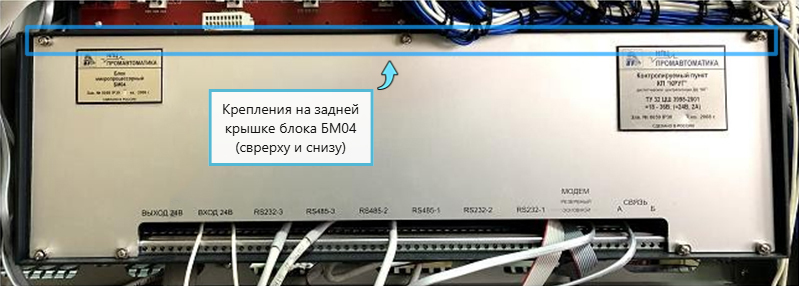
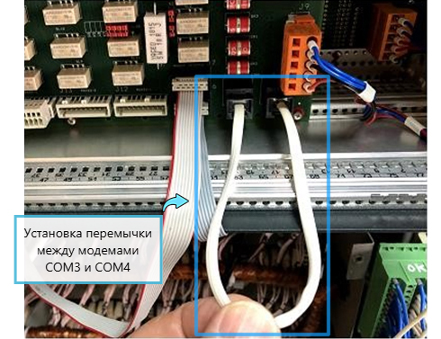

1. Состав исполнителей:
Состав исполнителей на железнодорожных участках:
| Исполнители |
Разряд квалификации не менее |
Количество исполнителей |
| Инженер сервисной организации |
- |
1 |
| Старший электромеханик (Электромеханик) |
- |
1 |
2. Условия производства работ
2.1. Проверка работоспособности модемов, их настройка, проверка наличия ошибок в канале связи с помощью специализированных программ, проверка аппаратных средств, обеспечивающих информационный обмен производится без прекращения функционирования системы.
2.2. Работа производится электротехническим персоналом, имеющим группу по электробезопасности при работе в электроустановках до 1000 В не ниже III,перед началом работ проинструктированным в установленном порядке.
2.3. К работе допускается обслуживающий персонал, прошедший специальную подготовку и выдержавший испытания в знаниях условий эксплуатации системы в соответствии с процедурами, принятыми в ОАО «РЖД».
3. Средства защиты, измерений, технологического оснащения; монтажные приспособления, испытательное оборудование, инструменты, техническая документация
Диспетчерская централизация ДЦ «Юг».Руководство пользователя «Модуль мониторинга каналов связи» 36818650.50 5200 003-02 91 18;
Диспетчерская централизация ДЦ «Юг».Руководства пользователя АРМ ДНЦ 36818650.50 5200 002-01 91 01;
Диспетчерская централизация ДЦ «Юг». Руководство по эксплуатации 36818650.39003.001-01 РЭ.
4. Подготовительные мероприятия
4.1. Подготовить техническую документацию, указанную в разделе 3.
5. Обеспечение безопасности движения поездов
5.1. Проверка работоспособности модемов, их настройка, проверка наличия ошибок в канале связи с помощью специализированных программ, проверка аппаратных средств, обеспечивающих информационный обмен,производится в технологическое «окно» с согласия поездного диспетчера (далее – ДНЦ) и электромеханика центрального поста.
5.2. Работа выполняется без оформления записи в Журнале осмотра путей, стрелочных переводов, устройств сигнализации, централизации и блокировки, связи и контактной сети формы ДУ-46 (далее – Журналосмотра).
5.3. Работа выполняется на основных и резервных блоках БМ04 КП «Круг».
5.4. При проверке аппаратных средств необходимо использовать антистатический браслет для исключения повреждения электронного оборудования разрядом статического электричества.
5.5. При выполнении работы обеспечить безопасность движения в соответствии с требованиями Инструкции по обеспечению безопасности движения поездов при технической эксплуатации устройств и систем СЦБ ЦШ-530-11, утвержденной распоряжением ОАО «РЖД» от 20 сентября 2011г. № 2055р.
Примечание. Здесь и далее по тексту целесообразно проверить действие ссылочных документов. Если ссылочный документ заменен (изменен), то при пользовании данной картой технологического процесса следует руководствоваться заменяющим (измененным) документом. Если ссылочный документ отменен без замены, то применяется та часть текста, где не затрагивается ссылка на этот документ.
6. Обеспечение требований охраны труда
6.1. При выполнении технологических операций следует руководствоваться требованиями «Инструкции по охране труда для электромеханика и электромонтера устройств сигнализации, централизации и блокировки в ОАО «РЖД» от 03 ноября 2015 № 2616р и «Правилами по охране труда при техническом обслуживании и ремонте устройств сигнализации, централизации и блокировки в ОАО «РЖД» (ПОТ РЖД-4100612-ЦШ-074-2015), утверждёнными распоряжением ОАО «РЖД» от 26 ноября 2015 г. №2765р.
ВНИМАНИЕ. Место работ должно иметь достаточное для их производства освещение. При необходимости следует применять переносные осветительные приборы.
7. Технология выполнения работ
Проверка работоспособности модемов, их настройка, проверка наличия ошибок в канале связи с помощью специализированных программ, проверка аппаратных средств, обеспечивающих информационный обмен.
Проверка работоспособности и настройка модемов на линии в составе аппаратных средств линейного пункта (микропроцессорный блок БМ04 КП «Круг») (Рисунок 1) проводится с помощью программного обеспечения контролируемого пункта (далее – ПОКП), установленного на контролируемом пункте станции ДЦ «ЮГ».
7.1. Открыть шкаф, в котором смонтирован микропроцессорный блокБМ04 КП «Круг» (далее – блок БМ04).
Рисунок 1. Микропроцессорный блок БМ04 КП «Круг».
7.2. Проверить работоспособность модемов и целостность линии связи по светодиодной индикации на лицевой панели блока БМ04 (Рисунок 2).
Для пояснения, наведитесь на стрелочку
Рисунок 2. Светодиодная индикация панели блока БМ04.
Индикаторы резервного БМ04

Индикаторы основного БМ04
ПРИМЕЧАНИЕ: В режиме нормальной работы светодиодные индикаторы активного блока БМ04 подсвечиваются зеленым цветом и промаргивают в моменты приема/передачи данных через соответствующий модем.
ПРИМЕЧАНИЕ: При использовании аналоговых модемов светодиодные индикаторы активного блока БМ04 подсвечиваются зеленым цветом после установки соединения со смежной станцией.
ВНИМАНИЕ: Активность блока БМ04 определяется горением зеленого индикатора «Основной» или «Резервный» на лицевой панели.
7.3. Проверить подключенные кабели и провода к блоку БМ04 и правильность их подключения, руководствуясь рабочей документацией.
7.4. Открыть дисплейную панель БД-03 и включить программный модуль контролируемого пункта (Рисунок 3).
Для пояснения, наведитесь на стрелочку
Рисунок 3. Вид окна программного модуля.
Модем COM3(пас)
7.5. Проверить состояние модемов и информационного обмена в линиях связи с помощью вкладок окна«Модем COM3(пас)» и «Модем COM4(акт)» (Рисунок 3). Необходимо оценить состояние модемов по цвету индикатора: красный цвет - ошибка при открытии последовательного порта модема; желтый - ожидание установки соединения (аналоговый модем); зеленый - норма, наличие соединения, белый - отсутствие данных в линии в течение 30 секунд и более.
В рабочем режиме работы информация должна передаваться постоянно либо по обоим каналам, либо по одному. Прием/передача информации по обоим каналам свидетельствует о нормальной работе связевого оборудования. Если информация принимается только по одному каналу, рекомендуется выполнить проверку работоспособности неактивного канала путем временного отключения активного в соответствии с пунктами 7.5.1-7.5.9.
ВНИМАНИЕ: При организации линий связи по типу точка-точка вкладка окна «Модем COM3(пас)» отображает состояние связи с предыдущей станцией в кольце, вкладка «Модем COM4(акт)» - состояние связи со следующей станцией.
ВНИМАНИЕ: При широковещательной организации линий связи «Модем COM3(пас)» отображает состояние связи в прямом канале, «Модем COM4(акт)» - в обратном.
ВНИМАНИЕ: в поле «Разрыв» отображается число разрывов связи в каналах точка-точка, в поле «Ош» - число обнаруженных ошибок при приеме пакета (ошибки формата, контрольной суммы и т.д.), в поле «Тип ош» - тип последней ошибки. Большое количество разрывов и ошибок свидетельствует о плохом качестве канала связи.
7.5.1. Открыть заднюю дверь шкафа, в котором смонтирован микропроцессорный блок БМ04, отвернуть крестовой отверткой болты крепленияи снять заднюю крышку на блоке БМ04 (Рисунок 4).
Для пояснения, наведитесь на стрелочку

Рисунок 4. Крепления на задней крышке блока БМ04.
Крепления на задней крышке блока БМ04 (сврерху и снизу)
7.5.2.Отсоединить разъем модема СОМ3, если информационный обмен со станцией производится по модему COM3 (Рисунок 5). При организации информационный обмен со станцией по модему СОМ4 отсоединить разъем модема СОМ4 (Рисунок 5).
В течение времени (не более 10 секунд) информационный обмен со станцией должен возобновиться по альтернативному модему, что свидетельствует о нормальной работе модемов.
Если обмен со станцией останавливается, необходимо проверить линии связи от блока БМ04 к связевому оборудованию.
Для пояснения, наведитесь на стрелочку
Рисунок 5. Разъемы модемов СОМ3 и СОМ4.
Разъем модема COM3
ВНИМАНИЕ: При использовании аналоговых модемов с установкой соединения «точка-точка» в тех случаях, когда отсутствует соединение со смежной станцией (индикатор модема в панели состояния связи горит желтым цветом), необходимо проверить работоспособность модемов путем установки «loopback» перемычки, соединяющей модемы COM3 и COM4 друг c другом напрямую (Рисунок 6). Если оба модема работоспособны, соединение обоих аналоговых модемов должно установиться за время не более 30 секунд, при этом оба индикатора состояния модемов COM3 и COM4 должны быть зеленого цвета. Если соединение не устанавливается в течение указанного времени, необходимо заменить модем, со стороны которого изначально не было соединения.
Для пояснения, наведитесь на стрелочку


Рисунок 6. Установка перемычки между модемами СОМ3 и СОМ4.
Установка перемычки между модемами СОМ3 и СОМ4
7.5.3. Для проверки работоспособности каналов приема передачи подключить в «USB-разъем»на передней панели активной половины блока БМ04 клавиатуру.
7.5.4. Нажать клавишу 1 (Разблокировка управление), ввести в появившемся окне запроса пароль доступа и разблокировать управление блоком.
7.5.5. Нажать на клавиатуре комбинацию клавиш «Shift+0» (включение отладочного режима), при этом на экране между панелями состояния COM3 и COM4 должен появиться и начать мигать перемежающимся зеленым и красным цветом индикатор отладочной связи COM3-COM4 (Рисунок 7).
Для пояснения, наведитесь на стрелочку
Рисунок 7. Индикатор отладочной связи.
Индикатор
7.5.6. Нажать на клавиатуре комбинацию клавиш «Shift+3» несколько раз, при каждом нажатии производится передача из COM3 в COM4 массива константных данных с меняющимися константами из ряда {0x00, 0xFF, 0x55, 0xAA}. Переданные данные должны отображаются в поле «ПРД» панели состояния COM3, такие же данные должны появляться по мере передачи в поле «ПРМ» противоположной панели COM4 (Рисунок 8).

Рисунок 8. Передача из COM3 в COM4.
7.5.7. Нажать на клавиатуре комбинацию клавиш «Shift+4» для проверки контроля передачи/приема из COM4 в COM3 массива константных данных.
ВНИМАНИЕ: Если данные не передаются или искажаются, необходимо выполнить замену модема и повторить проверку.
7.5.8. Отключить отладочный режим «Shift+0» и изъять из «USB-разъем» на передней панели активной половины блока БМ04 клавиатуру.
7.5.9. Восстановить кабельные подключения модемов COM3 и COM4,установить заднюю крышку на блоке БМ04 и завернуть крестовой отверткой болты крепления (Рисунок 4).
7.6. Оформить запись в Журнале осмотра.
Пример записи:
В свободное от движения поездов время будет произведено переключение с работающего процессорного модуля (БМ04) на резервный.
ШНД
ДНЦ
7.7. Провести переключение активности с основного БМ04 на резервный согласно ТНК ЦШ 0172-2015.
ВНИМАНИЕ: Переключение на резервный блок выполняется с помощью кнопки «Резерв» на панели БМ04 (Рисунок 2).
ВНИМАНИЕ: Коммутацию дисплейной панели к нужному микропроцессорному блоку необходимо выполнить вручную с помощью кнопки «О/Р» на дисплейной панели.
7.8. Выполнить проверки на резервном блоке БМ04 в соответствии с пунктами 7.4-7.5.
ВНИМАНИЕ: В случае выявления отклонений выполнить пункты 7.5.1-7.5.9.
7.9. В случае невозможности провести проверку работоспособности модемов, их настройку, проверку наличия ошибок в канале связи с помощью специализированных программ, проверку аппаратных средств, обеспечивающих информационный обмен передать информацию диспетчеру дистанции СЦБ для организации оповещения разработчика системы (центра сервисного обслуживания) для принятия мер.
8. Заключительные мероприятия, оформление результатов работы
После окончания проверки работоспособности модемов, их настройки,проверки наличия ошибок в канале связи с помощью специализированных программ, проверки аппаратных средств, обеспечивающих информационный обменоповестить ДНЦ и электромеханика центрального поста об окончании работы, сделать запись в журнале ШУ-2 о проведенной работе и внести результаты выполнения работы в систему ЕК АСУИ в соответствии с требованиями, изложенными в разделе 4 «Порядка планирования, учета и контроля выполнения работ в хозяйстве автоматики и телемеханики», утверждённого распоряжением ОАО «РЖД»от 13 января 2020 г. №20/р.
Начальник отдела ПКБ И
Конструктор 1 категории ПКБ И
Е.Н. Иванов
В.В. Харламов